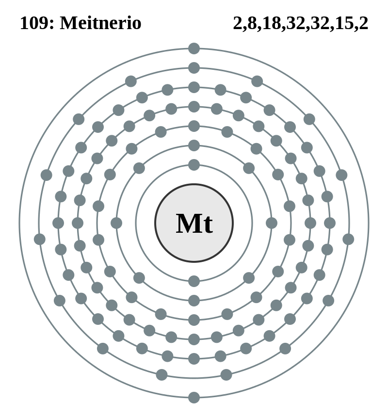

|
|
||
|
Meitnerio El meitnerio no tiene isótopos estables ni naturales; se forma mediante fusión de dos átomos o la desintegración de elementos más pesados. Se han documentado ocho isótopos, dos con estados metaestables. La mayoría de isótopos sufren desintegración alfa o fisión espontánea. El meitnerio es un metal de transición y forma parte del grupo del platino. Según los cálculos científicos, es probable que sus propiedades básicas se parezcan a las del cobalto, el rodio y el iridio. |
 |
DATOS Número Atómico: 109 Peso Atómico: 278 Electronegatividad: - Configuración Electrónica: [Rn]5f146d77s2 Estados de Oxidación: N/A No. de Electrones de Valencia: N/A |